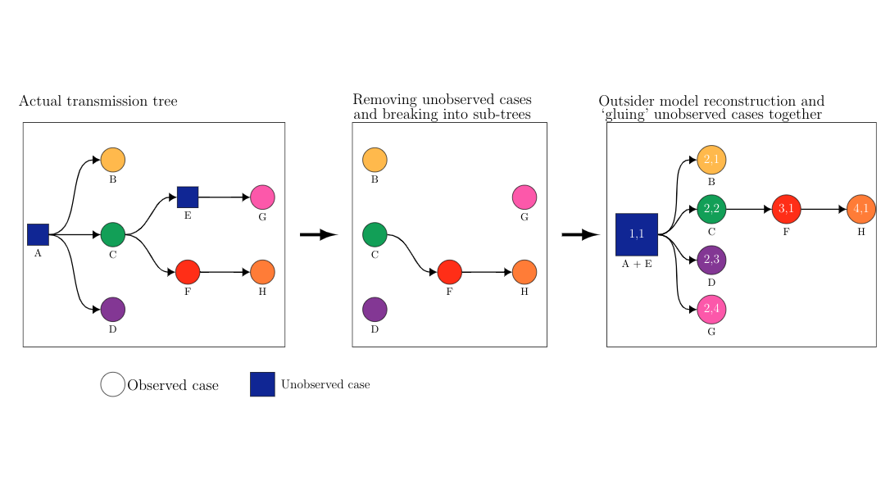

vignettes/not-built-vignettes/multiple-outside-transmissions-model.Rmd
multiple-outside-transmissions-model.RmdBriefly recap the base model and its limitation of forcing all clusters be directly connected via root node.
Describe the Multiple Outside Transmissions (MOT) model which addresses this problem.
Describe pros and cons of the MOT model.
The base model is described in detail here. The basic idea is that we sample transmission trees from the set of permissible transmission trees, \(\mathcal{T}_n\) and use these samples to estimate the average likelihood over a cluster.
However, \(\mathcal{T}_n\) is a set that forces all individuals within a cluster to be connected via transmission paths directly to a primary root node, the primary infector of the cluster. In other words, we assume that all transmissions, besides a single infection from the outside to the primary infector, within the cluster are observed. Effectively, this means we assume, possibly dubiously so, that there is no underreporting of cases.
For example, consider the below figure. The left shows the actual transmission tree, where individual \(A\) is the true root node. Individuals \(A\) and \(E\) (blue squares) are both unobserved and so are the transmissions into and out of those nodes.
Thus the best reconstruction of the original tree given only nodes \(B, C, D, F, G\), and \(H\) is shown in the middle figure, which is made of four disconnected sub-trees, three singlestons (\(T_A\), \(T_D\), and \(T_G\)) along with the subtree \(T_{CFH} = \{ C \to F \to H\}\). Unfortunately the forest \(F = (T_B, T_{CFH}, T_{D}, T_{G} )\) is not a permissible transmisison tree in \(\mathcal{T}_6\).
Our questions are 1) how can we (minimally) expand the set of permissible transmission trees to include forests like \(F\)? and 2) can we re-use the same sampling methods for sampling \(T \in \mathcal{T}_6\).

We approach the problem of including multiple sub-trees through a model we call the multiple outside transmission model (MOT). The MOT allows for underreporting of cases through a reconstruction of the observable nodes and transmissions and connecting separate sub-trees via a latent root node which we call the outsider. This reconstruction is pictured in the right-most figure pictured above.
The idea is a transformation of the original transmission tree into multiple sub-trees of the observable nodes and the latent otusider. For example, in the above figure, individual \(E\) is not observed and so our outsider model reconstruction considers individual \(G\) to be a singleton, separate from the other nodes. The consequence is that for \(n\) observed indiviudals in a cluster we permit the sampling of all transmission forests \(F = (O, T_1, \dots, T_W)\) where \(O\) represents the latent root quantity that directly infects \(W\) \(\in \{1, \dots, n\}\) individuals, who in turn are the root nodes of the transmission trees \(T_1, \dots, T_W\) such that the \(n\) individuals appear in exactly one of the sub-trees. We call this space of permissible forests \(\mathcal{F}_n\).
The likelihood for a given forest \(F\) with \(n\) observed nodes is \[ L(F) = (1-p_O)p_O^{N_O-1}\prod_{i=1}^n (1-p_i)p_i^{N_i}, \] where \(p_O\) is the probability of infection of the imputed outsider in the forest. The likelihood of the number of outsider successful infections is \(N_o -1\) and not \(N_O\) because we condition on the fact that the outsider must always have at least one positive transmission if we are to observe a cluster at all.
The only change to the total likelihood for a cluster \(C\) of size \(n\) is then \[ \mathcal{L}_O(C) = \sum_{F \in \mathcal{F}_n}L(F) \] and so we must sample from \(\mathcal{F}_n\) instead of \(\mathcal{T}_n\). However, note the reconstruction in the right-most figure pictured above is exactly a transmission tree in \(\mathcal{T}_{n+1}\) where we separately sample the covariates of the root node and randomly draw the remaining labels for the remaining \(n\) individuals in the later generations. The upshot of this is that we can use the same sampling method to sample \(T\in \mathcal{T}_n\) with only two minor modifications: We sample trees of size \(n+1\) instead of \(n\) and we permute the labels of the \(n\) individuals in the tree to the nodes in generation \(g \ge 2\) and randomly draw labels for outsider/root node.